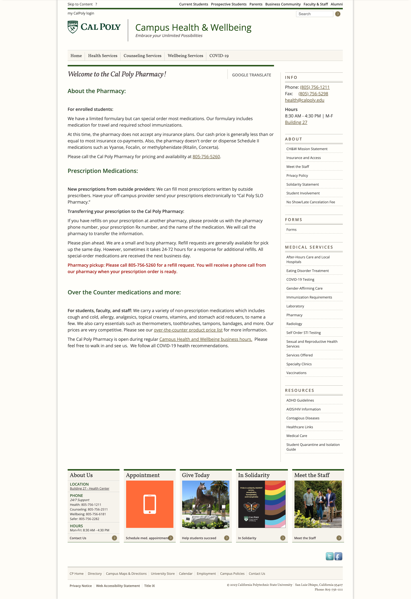
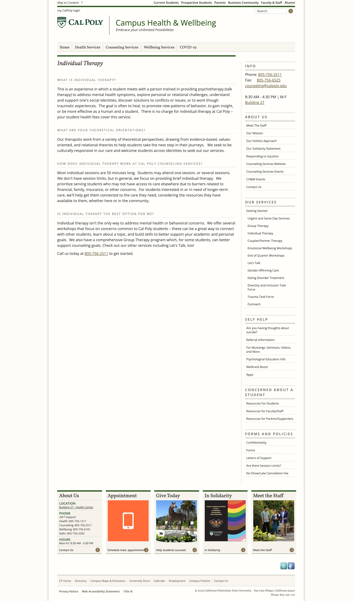
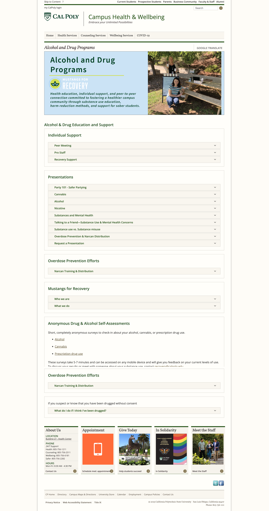
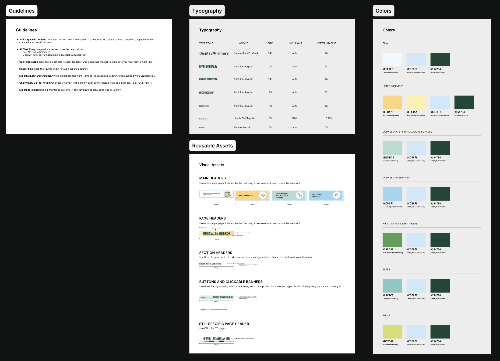

Cal Poly · UX Lead · Sept 2023 to Dec 2025
rebuilding trust in a campus health portal
I redesigned Cal Poly’s health portal to rebuild trust, improve clarity, and to transform into a campus-wide source of truth.
The problem
Students didn’t trust the website — so they avoided it entirely, even for basic information like hours and appointment booking.
What I did
Redesigned the portal end-to-end within Drupal 7 constraints, focusing on trust, clarity, accessibility, and information architecture.
Engagement
690%
increase in engaged sessions (13,003 → 102,652) in year one
Retention
60%
decrease in drop-off across redesigned pages
Delivery
100%
of designed work shipped over 2+ years of iteration
Dense text, weak hierarchy, critical actions buried
Clear hierarchy, stronger trust cues, easier decision-making
The problem
Students didn’t trust the website — so they stopped using it.
When I joined Campus Health and Wellbeing, the portal had only 13,003 engaged sessions across a campus of 23,000 students. But the real issue was behavioral: students would rather walk to the health center than rely on the site for basic information.
What was happening
Students walked in-person for hours, locations, and appointment info
Critical information buried 3+ clicks deep
Dense text created cognitive overload
Why it mattered
Low trust in the site as a reliable resource
High drop-off across key entry pages
Staff handled questions the portal should have answered
"Students were asking staff in person rather than use the website, even for basic things like hours and appointment booking."
Staff interviews, September 2023



Original portal — dense content, inconsistent hierarchy, and weak trust signals
The constraint
Drupal 7 offered almost no design flexibility.
Instead of treating the platform as a blocker, I designed a workaround system that prioritized clarity, trust, and accessibility within the limits of an outdated CMS.
Platform limitations
No font control, no color customization, no responsive layouts, and no modern component system.
My approach
Designed in Figma and exported visuals as PNGs into Drupal to preserve hierarchy and visual trust cues.
The tradeoff
PNG-based layouts don’t reflow responsively, which meant a desktop-optimized experience.
Why I accepted it
75% of users were on desktop, and the trust problem was more urgent than waiting years for a platform upgrade.
SEO risk
Image-based text is invisible to search engines — a major issue for a health resource portal.
How I handled it
Body copy remained native Drupal text for SEO, and every exported image received comprehensive alt text.

Component library used to create consistency, hierarchy, and reusable design decisions across the portal
The conflict
Staff wanted more text. Data showed that density was exactly why students left.
Health information felt too important to simplify, so staff often pushed for dense pages. Analytics showed those long text blocks were the clearest driver of abandonment.
Staff belief
More information meant more clarity. Students needed all the context before taking action.
What data showed
Long text blocks were the primary drop-off driver across informational pages.
My first instinct
React to each content-heavy request case by case in review meetings.
What worked better
Lead with data before the discussion started, shifting the conversation from preference to shared problem-solving.
The real solution
The answer wasn’t removing information. A lot of the content was genuinely important.
Design strategy
Progressive disclosure: short, scannable headers up front, with deeper detail available through linked pages and structured CTAs.
Research
No formal research budget. I built my own lightweight system.
Without a formal research budget, I built a scrappy research practice to stay close to real student behavior and validate design decisions quickly.
Methods
Social listening on Reddit and Facebook groups
Staff interviews to capture recurring questions
Guerrilla feedback through student assistants
Google Analytics deep dives on scroll and drop-off
Survey partnership for STI campaign research
Key insights
Students couldn’t find appointment booking without help
Health content felt clinical and unwelcoming
STI resources increased anxiety instead of action
75% desktop usage validated platform tradeoffs
Highest drop-off happened on dense informational pages
Design
System first. Pages second.
Before designing pages, I restructured the underlying information architecture to reduce complexity, eliminate duplication, and surface high-intent actions earlier.
Information architecture
Old IA
→
New IA
From fragmented navigation to task-based clarity
Before
Department-based structure — fragmented and hard to navigate
Campus Health & Wellbeing
└
Book Appointment duplicate
└
Recovery Resources dead link
Department-based structure
Key actions buried 3+ levels deep
Duplicate content across sections
Dead links throughout
After
Task-based structure — clearer paths and reduced complexity
Campus Health & Wellbeing
└
Medical · Counseling · Wellbeing
└
Mental Health & Counseling
└
PULSE · Mustangs for Recovery
Organized by student tasks
Max 2 levels deep
Single source of truth
Dead links removed
Structural shift: moved from a department-based hierarchy with buried actions and duplicated content to a flatter, task-based structure with clearer entry points.
What research showed
Clinical language and warning-style framing increased anxiety and caused students to disengage.
Design response
Make it feel like guidance, not a warning — warmer visuals, normalized language, and student-reviewed copy at every stage.

Survey booth used to gather real student input on testing attitudes and messaging tone
Final STI campaign design artifact
Add one final visual here: poster, landing page, flyer, or campaign asset
Use this slot to show warmth, tone, color, and communication craft — this is one of your best opportunities to surface visual design
Outcome
From 56% reach to nearly the entire campus.
In the first full year after the redesign, engaged sessions grew from 13,003 to 102,652. Drop-off fell 60% across redesigned pages. By year three, engagement had surpassed 200,000 sessions.
Beyond the metrics
Established the first UX function in the department
Built a reusable design system for future teams
Shipped 100% of designed work
Long-term impact
Portal became a trusted source of truth
Engagement continued growing after year one
The system scaled beyond my tenure
Year 1 · 2022–23
13K
engaged sessions
baseline
Year 2 · 2023–24
102K
engaged sessions
↑ 690%
Year 3 · 2024–25
200K+
engaged sessions
↑ continued growth
Learnings
What this project taught me
01
Constraints are a design material.
Drupal 7 forced sharper decisions about where control mattered most, and how to justify tradeoffs clearly.
02
Data builds alignment.
Leading with evidence turned stakeholder conflict into a shared problem-solving process.
03
Trust is the product.
The real challenge wasn’t making the portal look better — it was making students believe it was worth using.
.png)